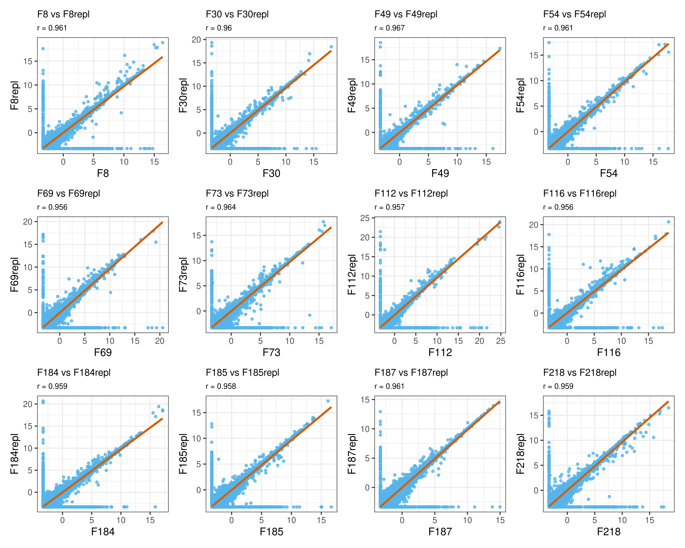

Exploratory data analysis: validation of technical replicates
Aims
The GSE96058 patient cohort contains 3273 samples of which 136 have technical replicates. Some of these replicates were sequenced on a different sequencer (HiSeq2000 and NextSeq500). In this report, I analyze the gene expression profiles of these technical replicates to assess their similarity. This serves as a technical validation before averaging their gene expression values.
Validation of technical replicates
The authors provided only transformed gene expression data, which I then used for downstream analysis.
Loading data
rep <- gexp |> select(contains('repl')) |> colnames() |> str_remove('repl')
mxrep <- gexp |>
select(genes, all_of(rep) | contains('repl')) |>
column_to_rownames(var = 'genes')
mdrep <- meta |>
filter(sampleID %in% colnames(mxrep)) |>
select(sampleID, instrument_model, age_at_diagnosis,
tumor_size, lymph_node_group, lymph_node_status,
her2_status, ki67_status, pgr_status, nhg,
endocrine_treated, chemo_treated) |>
column_to_rownames(var = 'sampleID')PCA
I apply a Principal Component Analysis (PCA) on the gene expression profiles of technical replicates (marked with the same color) to assess similarity in gene expression. As expected, technical replicates cluster together.
pc <- PCAtools::pca(mxrep, metadata = mdrep, center = TRUE, scale = FALSE, removeVar = 0.1)
stopifnot(rownames(mdrep) %in% rownames(pc$rotated))
plot_pca <- function(pc, pcx ='PC1', pcy = 'PC2'){
pc_data <- cbind(pc$rotated[, c(pcx, pcy)], mdrep) |>
rownames_to_column(var = 'sample')|>
mutate(strip_rep = str_replace(sample, 'repl', ''))
pc_val <- round(pc$variance[c(pcx, pcy)], 2) |> unname()
ggplot(pc_data, aes(x = !!sym(pcx), y = !!sym(pcy), color = strip_rep, shape = instrument_model)) +
geom_point(size = 3) +
labs(title = "",
x = paste0("PC1 (", pc_val[1], "% variance)"),
y = paste0("PC2 (", pc_val[2], "% variance)"),
shape = "Platform",) +
geom_text_repel(data = pc_data,
aes(label = sample),
min.segment.length = 5, max.overlaps = Inf) +
theme_bw() +
theme(plot.title = element_text(hjust = 0.5)) +
guides(color = "none")
}
plot_pca(pc, pcx ='PC1', pcy = 'PC2')
Sample correlations
For a quantitative overview, I compute the Spearman’s rank correlation for each pair. As expected, technical replicates are strongly correlated (coefficient higher than 0.9) and their gene expression can be safely averaged for downstream analyses.
mxrep_paired <- mxrep[, str_sort(colnames(mxrep), numeric = TRUE)]
tib <- tibble(
comparison = character(),
correlation = numeric(),
p_value = numeric(),
informative = logical(),
significant = logical()
)
for(i in seq(1, ncol(mxrep_paired)-1, by = 2)){
corr <- cor.test(mxrep_paired[, i],
mxrep_paired[, i+1],
method = 'spearman',
exact = FALSE
)
tmp <- tibble(
comparison = paste(colnames(mxrep_paired)[i:(i+1)], collapse=' vs '),
correlation = round(corr$estimate, 2),
p_value = corr$p.value,
informative = round(corr$estimate, 2) >= 0.90,
significant = corr$p.value < 0.05
)
tib <- rbind(tib, tmp)
}
datatable <- function(tib, row2display = 10) {
DT::datatable(tib,
rownames = FALSE,
extensions = "Buttons",
options = list(
dom = "Bfrtip",
scrollX = TRUE,
pageLength = row2display,
buttons = list(
list(
extend = "collection",
buttons = c("csv", "excel"),
text = "Download"
)
)
),
class = "display",
style = "bootstrap"
)
}
tib |> datatable()As an example, below I show the scatter plots of the first 12 pairs.
scatter_plot <- function(data, sample, replicate) {
ggplot(data, aes(x = !!sym(sample), y = !!sym(replicate))) +
geom_point(colour = "#56B4E9", alpha = 0.8, size = 1) +
geom_smooth(method = "lm", color = "#D55E00", formula = y ~ x, se = TRUE) +
labs(
title = paste(sample, "vs", replicate),
subtitle = paste("r =", round(cor(data[[sample]], data[[replicate]], method = "spearman"), 3))
) +
theme_bw() +
theme(
plot.title = element_text(size = 10),
plot.subtitle = element_text(size = 8)
)
}
get_pair <- function(tib, npairs=10){
pairs <- str_split(tib$comparison, " vs ", simplify = TRUE)[1:npairs,]
sample <- pairs[, 1]
replicate <- pairs[, 2]
return(list(sample = sample, replicate = replicate))
}
sp <- get_pair(tib, npairs = 12)
plist <- map2(sp$sample, sp$replicate, ~scatter_plot(mxrep, .x, .y))
wrap_plots(plist, ncol = 4)
Averaging of gene expression of technical replicates
mxrep_averaged <- c()
for(i in seq(1, ncol(mxrep_paired)-1, by = 2)){
mxrep_averaged <- cbind(mxrep_averaged, rowMeans(mxrep_paired[,i:(i+1)]))
# cat(colnames(mxrep_paired)[i], colnames(mxrep_paired)[i+1], 'averaged\n')
}
norep <- str_subset(colnames(mxrep_paired), 'repl', negate=TRUE)
colnames(mxrep_averaged) <- norep
gexp_rep <- mxrep_averaged |>
as.data.frame() |>
rownames_to_column(var = 'genes') |>
as_tibble()
fout <- 'data/gene_expression_profile.csv.gz'
if(!file.exists(fout)){
gexp |>
select(-all_of(colnames(gexp_rep)[-1])) |>
left_join(gexp_rep, by = 'genes') |>
select(-ends_with("repl")) |>
{\(s) ## lambda function ..
select(s, genes, all_of(str_sort(names(select(s, starts_with("F"))), numeric = TRUE)))
}() |>
## %>% select(., all_of(str_sort(colnames(select(., starts_with('F'))), numeric = TRUE)))
write_csv(fout) ## automatically compress by readr
}